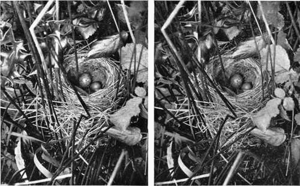
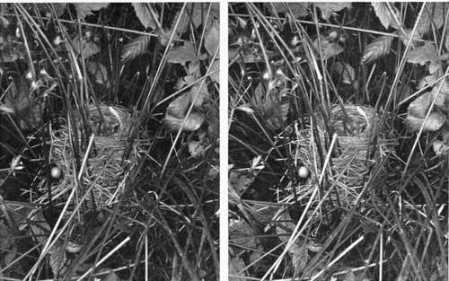
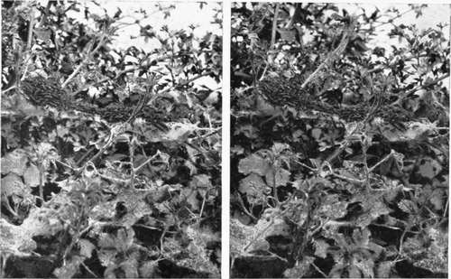
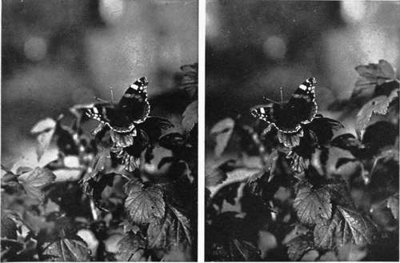
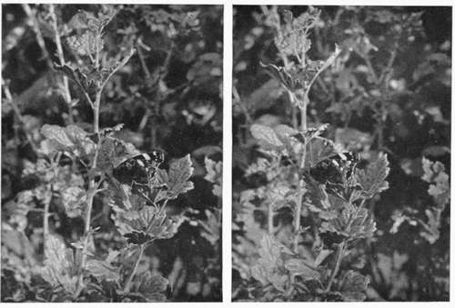

Birds And Their Nests And Eggs. Part 8
Description
This section is from the book "Nature Photography For Beginners", by E. J. Bedford. Also available from Amazon: Nature Photography for Beginners.
Birds And Their Nests And Eggs. Part 8
You have just finished in time. There is a slight shower coming, I think; cover your camera right over with the waterproof focussing cloth and we will stand under the shelter of this tree for a few minutes. The sunshine is already showing in the distance on the other side of the shadow of the cloud. But as you have brought your little cycling mackintosh, put it over your shoulders. I always carry one with me. It takes up very little room rolled up in the bag and is very useful in a shower. As I often carry my plates in a satchel on my back it serves to protect them and keep them dry too, which is very necessary.
I have just seen the Robin fly back to its nest. When the rain ceases we will walk quietly by and have a look at it, and if you like you can try and obtain a photograph of it on the nest. Hark! I think I heard the Cuckoo. Yes, I can hear it again. There it is, look, flying across to the tree yonder. It is the first time I have heard it this season. We must try and discover a nest containing a Cuckoo's egg by and by; it will make an interesting subject for you. When flying, the Cuckoo is very like a hawk, and it is often mobbed by the smaller birds, perhaps on this account. Occasionally one sees a record of a Cuckoo having been seen in February or even January, but I think without much doubt a Kestrel or Sparrow-hawk has been mistaken for it, and that the " Cuckoo " was really the individual who made the mistake.
Fig. 69. Sedge Warbler's Nest containing Cuckoo's Egg.
Fig. 70. Young Cuckoo 6 days old in Sedge Warbler's Nest.
It has ceased raining now, you can go back to the Robin's nest. You will, no doubt, remember where you placed your camera in taking the photograph just now. Go very quietly to work and you may succeed without disturbing the bird. Ah! she has gone off, she is evidently not sitting very hard. Well arrange your camera, put in the dark slide, set the shutter, and draw the shutter of the slide ready for the exposure, and place the green side of your focussing cloth over all except the lens. Put the end of the pneumatic release on the focussing cloth over the top of the camera and see that nothing obstructs the lens, and come back to me here. Now watch until the bird returns; she may be some time, but you will be having your first lesson in patience. Do not talk loud, keep quiet, and we will give her twenty minutes. Five minutes is up, it seems a long time when waiting, but I can see her some distance off, she is evidently anxious to return. Look! she actually settled on the top of the camera, but did not stay there long and has flown back to the hedge. Now keep a sharp look out, as she will probably pop into the nest slyly and you may not catch sight of her. Have you seen her? Not since you saw her on the hedge. Well you must still try to educate your eye to observe better. I saw her go into the nest a few minutes ago, and I have left her long enough to get settled down comfortably I think. Now go very carefully up to the camera and make the exposure. Do not walk up direct from here, but go away into the field for a few yards and then walk up quietly behind the camera. When you get close enough take hold of the shutter release, glance to see she is still on the nest, and give the exposure you have ascertained—two seconds. If she keeps still at all, she will keep still for a much longer time than that. When you have made the exposure, close the slide and quietly withdraw the camera. There, you have succeeded. I remember my first photograph of a Robin on its nest took me two hours and a half to get, but with the help of my experience you have done it in less than twenty minutes.
Fig. 50. Nest of Larvae of Lackey Moth.
Let us now return to the wood and look for another Pheasant's nest. We will examine this bank on the outskirts of it as we pass along. Wait a minute, I have lost my stick; I think I must have dropped it when we stood under the tree yonder where I helped you put on your mackintosh. I will run back and see; you stay here.
I have found it; I wanted it to move some leaves in the hedge just where you are standing; it looked something like a nest to me. Yes, it is, and a Pheasant's nest too, full of eggs. Look, I have carefully moved the leaves away with the point of my stick and there are the eggs, eighteen of them; five are a different colour to the others, showing that two birds have been laying in the same nest. I expect the bird which has laid the thirteen eggs will be the one to sit upon them and the other will have to start a fresh nest elsewhere. This being a larger subject will allow you to get further away or you will not be able to show the immediate surroundings of the nest. I always like to do this, because I think it adds interest to the picture. After you have exposed a plate on the eggs, I will re-cover them as they were before and you can then take the nest again. There, I have re-covered them, and you are quite right in expressing the opinion that anybody with untrained eyes would be almost certain to pass the spot by and never have the least suspicion there were eighteen eggs under those dead leaves. I dare say the keeper knows they are there, and no doubt a great many nests like this are found by Stoats, Weasels, and Rats, who often carry off the eggs. I am glad we have found this nest, as it will be still rather wet amongst the cover in the wood.
Here is apparently another little clump of dead leaves amongst this grass and bramble shoots in this dry ditch, but I think I know what it is. Watch while I tap it with my stick. There, you saw the bird go out this time; it is a Chiff-chaff's nest. It looks for all the world like a bit of rubbish, but on the further side you will see the entrance to the pretty domed nest, thickly lined with feathers. It contains six tiny white eggs with a few dark purplish spots on them. These are quite freshly laid, as the colour of the yolk can be seen through the delicate shell, and it gives the egg a beautiful pinkish tinge. Robin's eggs have the same appearance when fresh, but the spots on these are more rusty in colour and lighter than those on the eggs of the Chiffchaff. Perhaps you noticed this when you photographed the Robin's nest just now. I want you to remember this nest is about a foot off the ground, and I will tell you why I called your attention to it another time. You will have to place your tripod partly in the ditch in order to get the camera low enough, as the nest is so near the ground. Do not hurry; get a good view where you can see some of the eggs, although perhaps not all, as the nest is fairly deep. You can reflect a little light upon them by the mirror, as the inside of the nest is rather dark, and this will help to equalise the exposure required for the inside and outside of the nest. I heard the cock bird just now, singing his little song of two notes: "chiff chaff, chiff chaff," or " chip chop, chip chop," whichever you like. He gets his name Chiff-chaff from his song, and he is one of the earliest of the spring migrants to arrive on our shores. In suitable seasons he may be heard uttering his little notes from the middle to the end of March onwards, and to me the sound is always a welcome one, as it tells of the approaching spring. The birds are commoner in some districts than in others, but I have always found their nests during the season. Being double-brooded, eggs may be found as late as July.
Fig. 52. Red Admiral Butterfly (wings expanded).
Fig. 53. Red Admiral Butterfly (wings partly closed).
Continue to:
- prev: Birds And Their Nests And Eggs. Part 7
- Table of Contents
- next: Birds And Their Nests And Eggs. Part 9
Tags
nature, photography, art, birds, camera